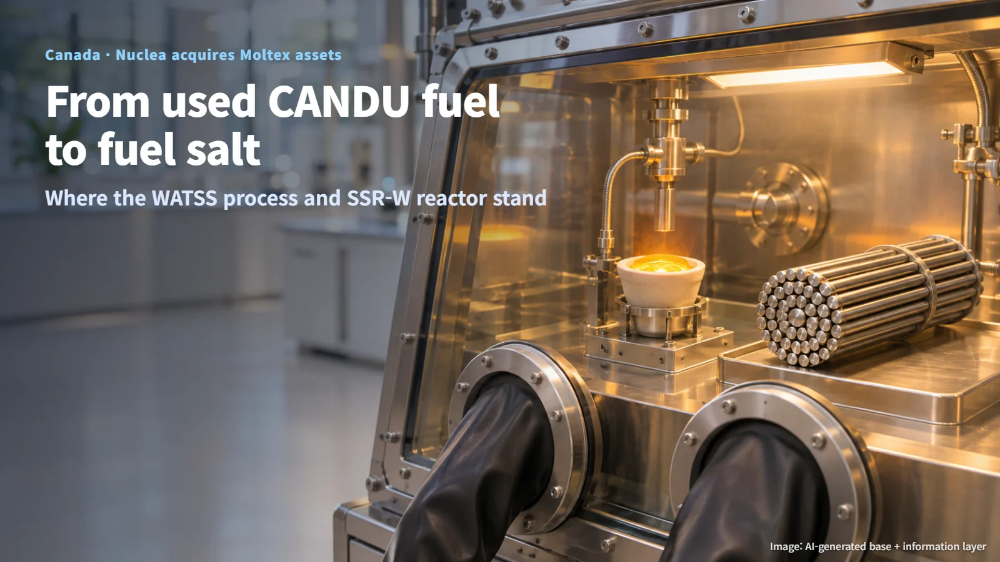
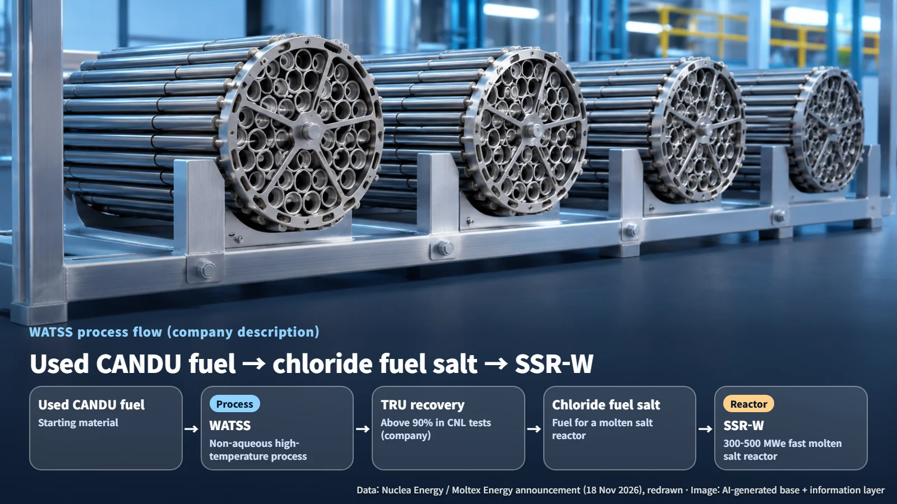
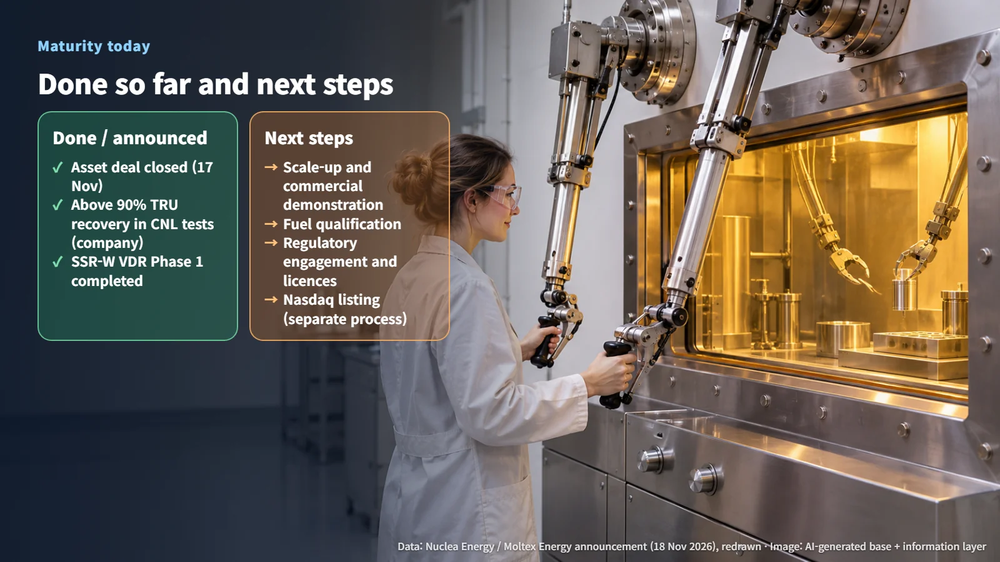

Canada · Fuel recycling · Molten salt
From Used CANDU Fuel to Fuel Salt: What Nuclea Bought From Moltex and Where WATSS and SSR-W Stand
Nuclea Energy has closed its acquisition of Moltex Energy assets, adding the WATSS recycling process and the SSR-W molten salt fast reactor design to its portfolio.
Few questions come up as often in nuclear energy as what to do with used fuel. If that material still holds usable energy, can it be turned back into fuel? An earlier post on the newcleo–Curio recycled-feedstock partnership looked at one answer. This week, a Canadian technology built around the same question changed hands.
On November 18, Nuclea Energy announced that it had completed the acquisition of certain assets, technology and intellectual property of Moltex Energy. The package includes WATSS, a used-fuel recycling process, and SSR-W, a molten salt reactor design. Here is what each one is and how far each has progressed.

What Changed Hands: WATSS, SSR-W and Morpheus
The transaction itself is complete. According to the company, its subsidiary Nuclea Energy Canada satisfied the customary closing conditions and closed the acquisition on November 17, announcing it the following day. What transferred were certain Moltex Energy assets, technology and intellectual property.
Two items sit at the core of the deal:
- WATSS: a recycling process that recovers usable material from used nuclear fuel and turns it into new fuel
- SSR-W: a 300–500 MWe fast-neutron molten salt reactor design intended to run on that recycled fuel
Nuclea already had a microreactor business called Morpheus. The acquisition adds fuel recycling and grid-scale generation technology to it. "Grid-scale" means a power-plant-class reactor feeding the transmission grid.
What does this change? One company now holds a microreactor aimed at smaller users, a 300–500 MWe grid reactor design, and a process for making that reactor's fuel out of used nuclear fuel. That is why the company's announcement highlights an "advanced, fully integrated closed nuclear fuel cycle." The idea is a loop in which fuel is recovered and burned again, planned by one company from the design stage onward.
From Used CANDU Fuel to Fuel Salt: How WATSS Works
WATSS starts with used CANDU fuel. CANDU is the Canadian-developed pressurized heavy water reactor, which uses heavy water as both coolant and moderator. Most of Canada's reactors are of this type, so most of the used fuel stored in Canada is CANDU fuel.
Following the company's description, the process runs in four steps:
1. Starting material: used CANDU fuel discharged from a reactor 2. WATSS processing: the fuel is treated with a non-aqueous, high-temperature chemical process 3. Transuranic recovery: the transuranic elements in the used fuel are separated and collected 4. Fuel salt production: the recovered transuranics are made into a chloride fuel salt for SSR-W
Two terms are worth unpacking. Transuranic elements (TRU) are elements heavier than uranium, with plutonium as the best-known example. They form inside a reactor when uranium absorbs neutrons, and they can themselves undergo fission, which makes them an energy resource.
A non-aqueous, high-temperature process handles the material without water. Conventional aqueous reprocessing dissolves used fuel in an acid solution and separates its components through water-based chemistry. A non-aqueous process works in a high-temperature chemical environment instead.
The concept aims to process recovered transuranic elements into chloride fuel salt for use in SSR-W. The company describes SSR-W as a fast-spectrum design with fuel salts contained in fuel assemblies. Composition, impurity control and qualification of the recycled material for reactor use remain important interfaces for further verification.

"Over 90% Recovery" and VDR Phase 1: Where the Technology Stands
The headline figure is a transuranic recovery rate above 90%. According to the company, this result comes from testing at Canadian Nuclear Laboratories (CNL) using actual used nuclear fuel.
Start with what the number measures. The recovery rate is the share of transuranic elements in the tested used fuel that the process recovered. Put simply, if the transuranics fed in are set at 100, more than 90 came out recovered, and the unrecovered share is 100 − 90 = 10, which works out to about 10% or less. In a recycling process, the unrecovered share stays on the waste side, so this ratio describes both how much returns as fuel and how much remains as waste.
The test conditions matter as well. Confirming the chemistry with real used fuel, rather than surrogate material, is a meaningful step. This is a developer-announced test result, and the next things to demonstrate are sustained operation and economics in a commercial-scale facility. The waste-reduction benefit will likewise be assessed under specific process and disposal conditions.
On the reactor side, the company announced that SSR-W has completed Phase 1 of the Canadian regulator's Vendor Design Review (VDR). A VDR is a pre-licensing review in which the regulator examines a design before any formal licence application and flags key issues against regulatory requirements. Completing Phase 1 marks the end of a first round of dialogue with the regulator on the design's basic approach; construction and operating licences come later through separate licensing steps.
Here is how the pieces line up:
| Item | Current status | Next step | |---|---|---| | Moltex asset acquisition | Closed November 17, 2026 (complete) | Business integration and development plans | | WATSS recycling process | CNL test with actual used fuel, over 90% recovery (company-announced) | Scaled-up testing; commercial-scale sustained operation and economics | | Recycled fuel (fuel salt) | Planned output of the process | Fuel qualification | | SSR-W reactor | VDR Phase 1 complete (company-announced) | Regulatory engagement, then construction and operating licences |
The weight of this news rests on the completed transfer of ownership, while the technologies themselves are at the development stage, having passed testing and a pre-licensing design review.

Steps to Commercialization, and a Separate Listing
Running a reactor on recycled fuel requires the process and the reactor to mature individually and to fit together. The items to watch next sit right at that connection:
- Scaled-up recycling tests: whether the recovery performance seen at test scale carries over to larger scale
- Fuel qualification: whether the fuel salt from the process meets the requirements for reactor fuel
- Regulatory engagement: progress in discussions with the regulator on both the fuel and the reactor
- Schedules and funding: development timelines and financing for each project
This is where owning both the process and the reactor pays off. The company can tune fuel-salt composition and impurity control to the fuel requirements of its own reactor design. Upcoming results from scaled-up testing and fuel qualification will be the key milestones for judging whether the concept can be realized.
Nuclea is also pursuing a Nasdaq listing transaction. That process runs separately from the Moltex asset acquisition, with its own terms and timeline.
This deal puts into one company's portfolio the view that the transuranics inside used fuel are fuel waiting to be used again. Whether that view leads to a working power plant will become clear step by step, through scaled-up tests, fuel qualification and each stage of licensing. We will return to it as those milestones arrive.